DE - Higher Order DE to First Order DE Home : www.sharetechnote.com
Converting High Order Differential Equation into First Order Simultaneous Differential Equation
As far as I experienced in real field in which we use various kind of engineering softwares in stead of pen and pencil to handle various real life problem modeled by differential equations. This would be very important topics but I have seen almost no textbook which touches this kind of topics in detail. In many case, they just shows the final result (a bunch of first order differential equation converted from high order differential equation) but not much about the process.
Let's assume that we have a higher order differential equation (3rd order in this case).

Our goal is to convert these higher order equation into a matrix equation as shown below which is made up of a set of first order differential equations.

We will look into the process of the conversion through some examples in this section, but before going there, I want to mention a little bit about why we need this kind of conversion.
Why do we want this kind of conversion ? Just to give us another type of headache ? Of course not -:)
As shown in the following illustration, once we get a bunch of first order differential equations out of Higher order equation, we can
i) use them more easily for numerical processing to solve the problem (See Differential Equation pages of Matlab/Octave)
ii) convert into a matrix form in which we can use a lot of linear algebra tools to analyze/solve the equation
iii) (Mostly in Control System theory) convert into a state space model which can be analyzed by various tools specially designed for State Space analysis tool. (See Differential Equation pages of Matlab/Octave)
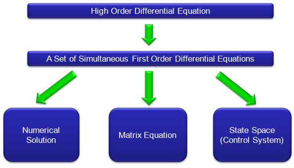
Now let's look into the detailed process for this conversion through following examples.
< Example : 2nd Order Homogeneous Lineare Differential Equation - System with no external input >
Let's assume that we have a 3rd order differential equation as follows.

There can be several different way for the conversion, but my trick is like this. First, I look for the order of the equation and replace all the terms of lower than the order with different variables. Since this is 3rd order differential equation, I will replace 2nd, 1st, 0th term with other variables as shown below.


You can also do this replacement process as shown below. The method shown above would give you mathematical meaning of the replacement process, but once you fully understand the mathematical meaning the method shown below would be a handy shortcut for this process.

As you see above, I replaced the 0th, 1st, 2nd order term with x1,x2,x3 respectively. If we plug in these variable into the original equation and do a little bit of rearrangement, we get the following equation.
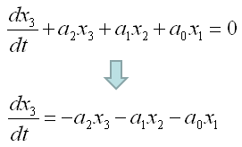
If you collect all the equations which is the first order, you would get following three equations. In this case, the first two equations were directly from our definition and the third one is from original equation.
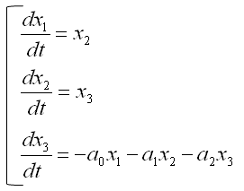
This is the end of the process, if you want to solve this differential equations in a numerical method as explained in this page. But if you want to convert this set of simultaneous equations into a matrix form, it would be good to revise the equations as follows.

Now you will easily convert these simulteneous equation into a matrix form as follows.
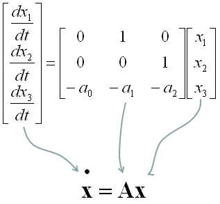
Now I have another equation. This is almost same as the first equation but only one minor diference. (I would strongly recommend you to go through the first example before you go through this example).
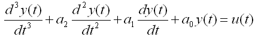
As we did in the first example. I look for the order of the equation and replace all the terms of lower than the order with different variables. Since this is 3rd order differential equation, I will replace 2nd, 1st, 0th term with other variables as shown below.

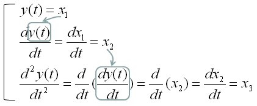
Here goes the second method again. You can pick whatever method you like.
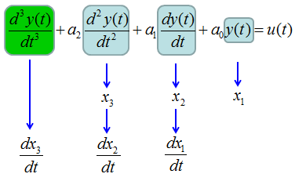
As you see above, I replaced the 0th, 1st, 2nd order term with x1,x2,x3 respectively. If we plug in these variable into the original equation and do a little bit of rearrangement, we get the following equation.

If you collect all the equations which is the first order, you would get following three equations. In this case, the first two equations were directly from our definition and the third one is from original equation.
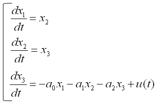
This is the end of the process, if you want to solve this differential equations in a numerical method as explained in this page. But if you want to convert this set of simultaneous equations into a matrix form, it would be good to revise the equations as follows.
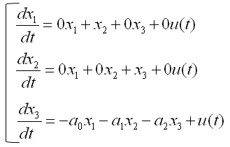
Now you will easily convert these simulteneous equation into a matrix form as follows.

From the equation above, you lost y(t). You can express y(t) in generic form as follows.

Now you have to figure out unknown values marked above. You can figure out those unknown values as shown below.
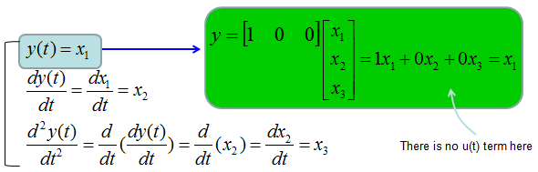
Combining the two matrix equations that we built from the long procedure described above, you can have a set of matrix as shown below. This form of matrix equation is called 'State Space' matrix equation.
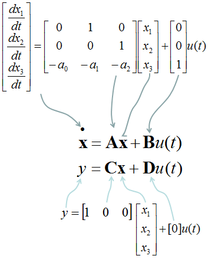
< Example : Simultaneous Differential Equation (System Equation) >
Previous example shows how we can convert one higher linear order differential equation into a single matrix equation. In this example, I will show you the process of converting two higher order linear differential equation into a sinble matrix equation. If you extend this procedure, you can convert any number of higher order differential equations into a single matrix equation.
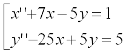
You see two variables (more specification, two functions x(t) and y(t)) in this equations and two differential terms x'(t), y'(t). Now let'sdefine these functions and differentials as follows.
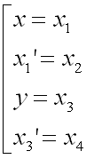
If you substitue the original equations with the variables that you defined above, you get a new equations as follows.

If you combine the new equations and your definitions so that first order diffential forms are at the right side and all the remaining terms are on the right side.
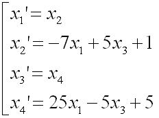
Now you can convert the above equations into the following format. Do you know why I am doing this kind of conversion using many of '0' terms which does not have much meaning in mathematical sense ?
It is to convert this simultaneous equations into the matrix form.
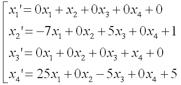
Now you can easily convert this equation into a matrix form as shown below.
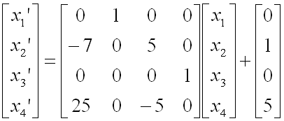